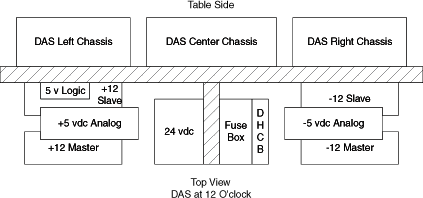
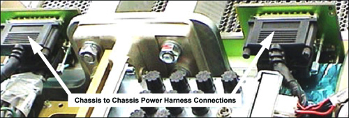
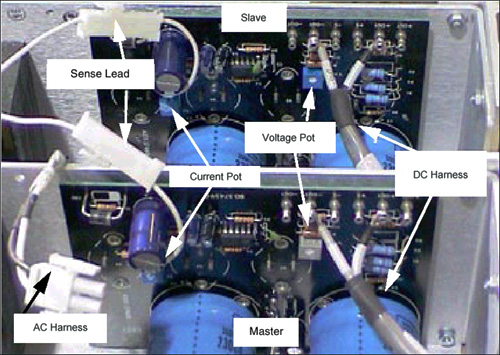
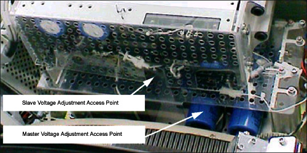

Operating Documentation
Direction 5224328-800, Rev# 5
Dir 5224328-800 LightSpeed 5.X HP60 Limited Access Service
Methods - Adv.
Operating Documentation |
| Required Persons | Preliminary Reqs | Procedure | Finalization |
|---|---|---|---|
| 1 |
This procedure describes 2 distinct methods for adjusting the DAS power supplies. Specifically the 12 volt analog power supplies. It is important to follow the detailed procedure to ensure the proper current load is achieved.
Procedure Objective:
Adjust specific voltage to be within specifications.
Provide correct current balance for the 12 vdc power supplies after part replacement.
Procedure Summary:
Remove covers and tilt gantry forward 30 degrees.
Connect DVM.
Adjust voltage as specified in detail procedure.
| Last Revised: | March 29, 2005 |
| Item | Qty | Effectivity | Part# | Manufacturer | |
|---|---|---|---|---|---|
| Insulated “Tweaker” adjustment tool, 6 inch length | 1 | - | - | - | |
| Item | Qty | Effectivity | Part# | Manufacturer |
|---|---|---|---|---|
| Tie-wraps | - | - | - |
To aid in this adjustment, monitor the test points on the center backplane with a meter. However, the test point voltage values will differ from those displayed in “Aux Channel Test” in DAStools, which reports actual voltages. The supply voltages are correctly set when the display in DAStools Aux Channel Test reads the specified values.
Test Points are available on the Center Backplane to measure Power Supply voltages:
Table 1: DAS Backplane Voltage Test Points
| Test Point | Description | DC Level Specifications | Noise & Ripple Peak to Peak Specification |
| TP1 | +5 VDC Digital wrt LGND | +5 VDC ± 0.25 VDC | 5 mV in 20 Mhz Bandwidth |
| TP2 | LGND (Logic Ground) | ||
| TP3 | +12 VDC Analog wrt AGND | +12 VDC ± 0.6 VDC | 5 mV in 20 Mhz Bandwidth |
| TP4 | AGND (Analog Ground) | ||
| TP5 | +5 VDC Analog wrt AGND | +5 VDC ± 0.25 VDC | 5 mV in 20 Mhz Bandwidth |
| TP6 | -12 VDC Analog wrt AGND | -12 VDC ± 0.6 VDC | 5 mV in 20 Mhz Bandwidth |
| TP7 | AGND (Analog Ground) | On Center Chassis | |
| TP8 | -5 VDC Analog wrt AGND | -5 VDC ± 0.25 VDC | 5 mV in 20 Mhz Bandwidth |
Table 2: 24 volt ORP Voltage Test Points
| Test Point | Description | DC Level Specifications | Noise & Ripple Peak to Peak Specification |
| TP1 | ORP P24_IN | 24 vdc ± 2.0 vdc | 3 mV + 0.02% of output voltage |
| TP2 | ORP P24_RTN | 24 volt reference |
Illustration 1: MDAS 16 Power Supply Identification

The MDAS 16 requires the use of parallel power supplies, specifically the 12 vdc supplies. There are two (2) +12 vdc in parallel and two (2) -12 vdc in parallel. These are configured in a master/slave operation. The slave is set for 11 vdc at the center DAS chassis. The master is set at 12 vdc at the DAS center backplane. The 12 vdc power supplies are linked together with a voltage sense line. The fully populated MDAS 16 requires 15 to 18 amps of current for normal operation. Each individual power supply is capable of providing 10 amps of current. To prevent current oscillation there is a 1 volt dc offset between the master and slave power supplies. The master power supply provides the final full load adjustment for DAS operation. Failure to adjust the 12 vdc power supplies correctly can result in a power supply crowbar state, intermittent image artifact or noise failures.
Remove the Gantry Side, Top and Rear Covers.
Raise the table to its maximum height.
Tilt the gantry forward 30 degrees, to provide easy access to the power supply adjustment pots.
| Always turn OFF the HVDC before the 120 VAC. Turning OFF 120 VAC power before HVDC power can result in equipment damage. | |
Turn OFF Axial Enable, HVDC, and 120VAC switches on the Service Switch panel.
| POTENTIAL FOR SHOCK. | |
| VOLTAGE IS PRESENT. | |
| Failure to use an Insulated voltage adjustment “Tweaker” can result in personal injury and/or component damage. |
Rotate the gantry so the power supplies are accessible between 10 and 2 O’clock.
For general, minor adjustment of the +/- 12 vdc power supplies, only the Master is adjusted.
Refer to Illustration 3 for adjustment pot locations.
For +/- 12 vdc power supply replacement the following procedure must be followed.
| Do Not adjust the Current Limit Potentiometer. The 12 vdc power supplies must be balanced correctly for proper operation. | |
Disconnect the DAS Chassis to Chassis power cables at the Center DAS Chassis.
Illustration 2: Center Backplane Power Harnesses

Disconnect the Master 12 vdc AC, DC and Sense connectors. See Illustration 3.
Illustration 3: Master and Slave +/- 12 vdc Power Supplies (items removed for clarity)

Connect the DVM to the Center Chassis plus or minus 12 vdc test point and analog ground.
Turn on the Service 120 vac switch.
| POTENTIAL FOR SHOCK. | |
| VOLTAGE IS PRESENT. | |
| Failure to use an Insulated voltage adjustment “Tweaker” can result in personal injury and/or component damage. |
Adjust the slave 12 vdc supply for 11 vdc on the DVM. See Illustration 4.
Illustration 4: Master Slave Voltage Adjustment Access

Turn off the Service 120 vac power switch.
Reconnect the Master 12 vdc AC, DC and Sense connectors.
| POTENTIAL FOR SHOCK. | |
| VOLTAGE IS PRESENT. | |
| Failure to use an Insulated voltage adjustment “Tweaker” can result in personal injury and/or component damage. |
Turn ON the Service 120 vac power switch.
Adjust the Master power supply for 12.2 vdc on the DVM.
Turn off the Service 120 vac power switch.
Reconnect the DAS Chassis to Chassis power cables at the Center DAS Chassis.
| POTENTIAL FOR SHOCK. | |
| VOLTAGE IS PRESENT. | |
| Failure to use an Insulated voltage adjustment “Tweaker” can result in personal injury and/or component damage. |
Turn ON the Service 120 vac power switch.
Make the final adjustment on the Master power supply for 12.0 +/- 0.6 vdc on the DVM.
Restore power and reassemble gantry.
Each of these power supplies is a single source and is to be adjusted under full load.
| Do not adjust the current potentiometers. These are set by the manufacturer. | |
Illustration 5 shows the voltage adjustment pot locations.
Perform test scanning and verify proper system operation.